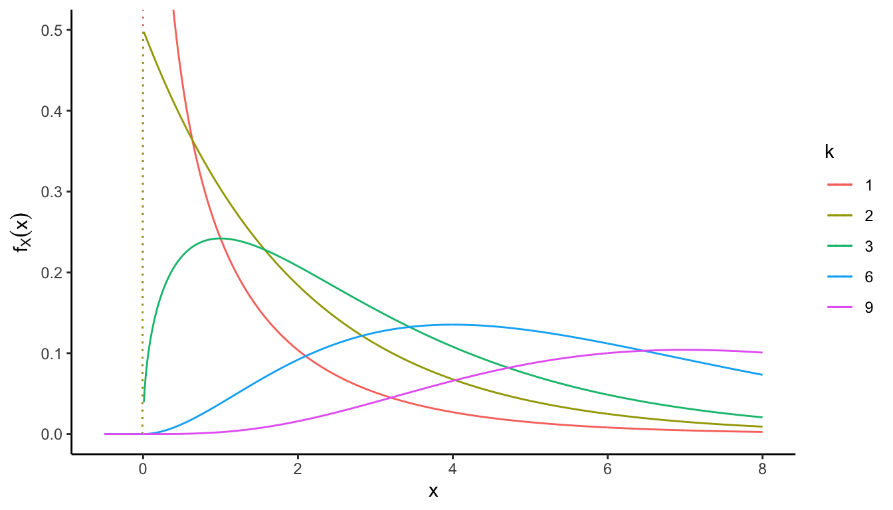
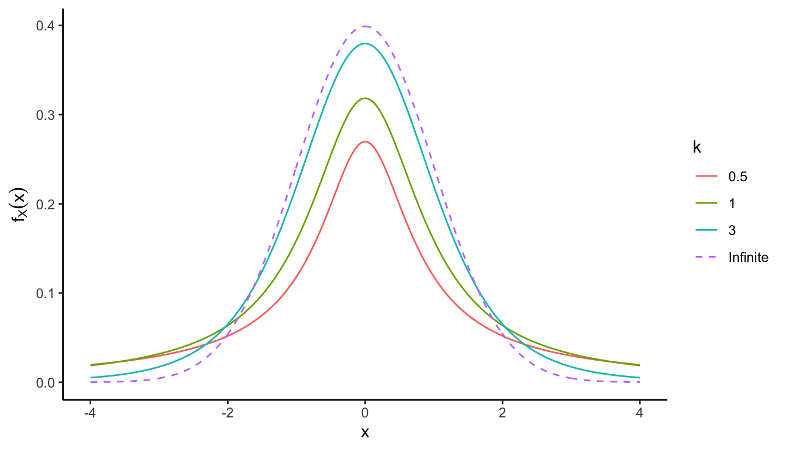
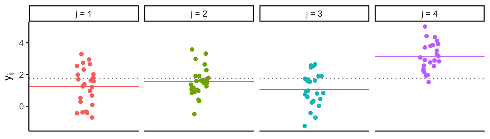

3.6 Normal random samples
Given that the normal distribution is very often used, the properties of normal random samples have been studied extensively.
Theorem 3.5 Let \(\{X_1,\dots,X_n \}\) be a sample from \(\mathop{\mathrm{N}}(\mu,\sigma^2)\), and let
\[\bar X = \frac{1}{n}\sum_{i=1}^n X_i, \hspace{2em} S^2 = \frac{1}{n-1}\sum_{i=1}^n (X_i - \bar X)^2, \hspace{1em} \text{ and } \hspace{1em} \text{SE}(\bar X) = S/\sqrt{n}.\]
Then,
- \(\bar X\) and \(S^2\) are independent random variables
- \(\bar X \sim \mathop{\mathrm{N}}(\mu,\sigma^2/n)\)
- \((n-1)S^2/\sigma^2 \sim \chi^2_{n-1}\)
- \(\frac{\sqrt n (\bar X - \mu)}{S} = \frac{\bar X - \mu}{\text{SE}(\bar X)} \sim t_{n-1}\)
The above theorem mentions two kinds of distribution (that you may have heard of) but we are yet to discuss. We’ll circle back to the proof othis theorem after covering the \(\chi^2\) and \(t\) distributions.
3.6.1 \(\chi^2\)-distribution
The \(\chi^2\)-distribution is an important distribution in statistics. It is closely linked with the normal, Student’s \(t\) and \(F\) distributions. Inference for the variance parameter \(\sigma^2\) relies on \(\chi^2\)-distributions. More importantly, most goodness-of-fit tests are based on \(\chi^2\)-distributions.
Definition 3.6 ($\chi^2$-distribution) Let \(Z_1,\dots,Z_k \,\overset{\text{iid}}{\sim}\,\mathop{\mathrm{N}}(0,1)\), i.e. each \(Z_i\) has pdf \(f(z_i) = (2\pi)^{-1/2}e^{-z_i^2/2}\) for \(i=1,\dots,k\). Then, \[X = Z_1^2 + \dots + Z_k^2 = \sum_{i=1}^k Z_i^2\] follows a \(\chi^2\)-distribution with \(k\in\mathbb{N}\) degrees of freedom. We write \(X \sim \chi^2_k\).
Out of curiosity, the pdf of a \(\chi^2_k\) distribution is \(f(x) = Cx^{k/2-1}e^{-x/2}\), where the normalising constant \(C\) is equal to \(2^{-k/2}\Gamma^{-1}(k/2)\) (\(\Gamma(\cdot)\) is the gamma function). The form of the pdf is less important to know than the definition of \(\chi^2_k\) distribution given in Definition 3.6.
Here are some important properties of the \(\chi^2_k\) distribution.
- \(X\) has support over \([0,\infty)\).
- \(\mathop{\mathrm{E}}(X)=k\).
- \(\mathop{\mathrm{Var}}(X) = 2k\).
- If \(X_1\sim\chi^2_{k_1}\) and \(X_2\sim\chi^2_{k_2}\), and \(X_1 \perp X_2\), then \(X_1+X_2\sim \chi^2_{k_1+k_2}\).
There is a question at the end of this chapter where you will prove the above statements.
Pdf of \(\chi^2_k\)

Probabilities such as
\[\Pr(\chi_k^2 \leq x) = \int_0^x f_X(\tilde x) \mathop{\mathrm{d}}\hspace{0.5pt}\!\tilde x\] where \(f_X\) is the pdf of \(\chi^2_k\) cannot be found in closed form.
Instead, the integral is calculated using computer approximations for the integral above.
In R,
pchisq(2, df = 3)## [1] 0.4275933Alternatively, statistical tables are used. You will find tables for percentiles of the \(\chi^2\)-distribution. That is, you are able to find the value of \(x:=\chi^2_k(\alpha)\) such that
\[\Pr(\chi_k^2 \leq x) = \int_0^x f_X(\tilde x) \mathop{\mathrm{d}}\hspace{0.5pt}\!\tilde x = A = 1-\alpha\] for various values of \(A\) and \(k\).
Example 3.9 Let \(Y_1,\dots,Y_n\,\overset{\text{iid}}{\sim}\,\mathop{\mathrm{N}}(\mu,\sigma^2)\). Then, \(Z_i = \frac{Y_i-\mu}{\sigma} \sim \mathop{\mathrm{N}}(0,1)\), and hence
\[\frac{1}{\sigma^2} \sum_{i=1}^n (Y_i-\mu)^2 = \sum_{i=1}^n Z_i^2 \sim \chi^2_n .\]
Note that \[\begin{equation} \frac{1}{\sigma^2} \sum_{i=1}^n (Y_i-\mu)^2 = \frac{1}{\sigma^2} \sum_{i=1}^n (Y_i-\bar Y_n)^2 + \frac{n}{\sigma^2} (\bar Y_n -\mu)^2. \tag{3.3} \end{equation}\]
Since \(\bar Y_n \sim \mathop{\mathrm{N}}(\mu, \sigma^2/n)\), it must be that \(\frac{n}{\sigma^2} (\bar Y_n -\mu)^2 \sim \chi^2_1\). Thus, by the properties of the \(\chi^2\)-distribution, the decomposition in (3.3) may be written as \(\chi^2_n = \chi^2_{n-1} + \chi^2_{1}\). In particular, we now know \[\frac{1}{\sigma^2} \sum_{i=1}^n (Y_i-\bar Y_n)^2 \sim \chi^2_{n-1} .\]
3.6.2 Student’s \(t\)-distribution
This is another important distribution in statistics, because:
- The \(t\)-test is a widely used distribution for statistical tests in many application.
- Confidence intervals for normal mean with unknown variance may be constructed based on the \(t\)-distribution.
Definition 3.7 ($t$-distribution) Suppose we have two random variable \(Z\sim\mathop{\mathrm{N}}(0,1)\) and \(X\sim\chi^2_k\) such that \(X\) and \(Z\) are independent. Then, the distribution of the random variable \[T = \frac{Z}{\sqrt{X/k}}\] is called the \(t\)-distribution with \(k\in\mathbb{N}\) degrees of freedom. We write \(T\sim t_k\).
The pdf for \(T \sim t_k\) is given by \[f(t) \propto \left(1 + \frac{t^2}{k} \right)^{-\frac{k+1}{2}},\] but once again the actual form of the pdf is not as important as the definition of the \(t\)-distribution.
Some important properties of the \(t\)-distribution:
- \(T\) is continuous and symmetric over \((-\infty,\infty)\).
- \(\mathop{\mathrm{E}}(T)=0\), provided \(\mathop{\mathrm{E}}(|T|) < \infty\) (\(k>1\)).
- \(\mathop{\mathrm{Var}}(T) = \frac{k}{k-2}\).
- Technically, \(k\in\mathbb{R}\), but we will usually deal with \(k\in\mathbb{N}\).
Pdf of \(t_k\)


Figure 3.1: William Sealy Gosset. 13 June 1876 – 16 October 1937.
The \(t\)-distribution30 has what is known as heavy tails. That is, if \(T\sim t_k\), its mgf is undefined and hence \(\mathop{\mathrm{E}}(|T|^k) = \infty\). Comparing this to the normal distribution: \(X\sim\mathop{\mathrm{N}}(\mu,\sigma^2)\), \(\mathop{\mathrm{E}}(|X|^k) < \infty\) for any \(k>0\). This ‘heavy-tails’ property is a useful property in modelling abnormal phenomena or outliers (e.g. in financial or insurance data). c.f. “robust statistics”
The connection between the \(t_k\) distribution and the normal distribution, is that the \(t_k\) actually approaches the standard normal as the degrees of freedom increases.
Lemma 3.6 \(t_k \xrightarrow{\text{D}} \mathop{\mathrm{N}}(0,1)\) as \(k\to\infty\).
Proof. If \(X\sim\chi^2_k\), then by definition \(X = Z_1^2 + \dots + Z_k^2\), where \(Z_i\,\overset{\text{iid}}{\sim}\,\mathop{\mathrm{N}}(0,1)\). By the LLN, \[\frac{X}{k} = \frac{Z_1^2 + \dots + Z_k^2}{k} \xrightarrow{\text{P}} \mathop{\mathrm{E}}(Z_1^2) = 1.\] as \(k\to\infty\). Therefore, \(\sqrt{X/k} \xrightarrow{\text{P}} 1\), and in particular, \[T = \frac{Z}{\sqrt{X/k}} \xrightarrow{\text{D}} \mathop{\mathrm{N}}(0,1)\] following Slutzky’s theorem.
3.6.3 Proof of Theorem 3.5
Back to this theorem. Let’s prove it.
- follows directly from properties of normal distributions, and earlier we showed that \(\frac{1}{\sigma^2}\sum_{i=1}^n (X_i - \bar X)^2 \sim \chi^2_{n-1}\) which settles iii.
To prove i., consider any \(X_j\), \(j\in\{1,\dots,n\}\) and \(\mathop{\mathrm{Cov}}( X_j - \bar X, \bar X)\): \[\begin{aligned} \mathop{\mathrm{Cov}}( X_j - \bar X, \bar X) &= \mathop{\mathrm{Cov}}( X_j, \bar X) - \mathop{\mathrm{Cov}}(\bar X, \bar X) \\ &= \mathop{\mathrm{Cov}}\left(X_j, \frac{1}{n}\sum_{i=1}^n X_i\right) - \mathop{\mathrm{Var}}(\bar X) \\ &= \frac{1}{n} \sum_{i=1}^n \mathop{\mathrm{Cov}}(X_j,X_i) - \sigma^2/n = \sigma^2 /n - \sigma^2 /n = 0 \end{aligned}\] Since the covariance is zero and they are normal, they are independent.
Following this, if \(\bar X\) is independent of \(X_j - \bar X\) for any \(j\), it stands to reason that \(\bar X\) is also independent of \(\tilde {\boldsymbol X}= (X_1-\bar X,\dots,X_n-\bar X)^\top\), and also of \[\tilde{\boldsymbol X}^\top\tilde{\boldsymbol X}= \begin{pmatrix} X_1-\bar X & \cdots & X_n-\bar X \end{pmatrix} \begin{pmatrix} X_1-\bar X \\ \vdots \\ X_n-\bar X \end{pmatrix} = \sum_{i=1}^n (X_i - \bar X)^2 = (n-1)S^2,\] and thus also of \(S^2\). Here we used the fact that if \(X \perp Y_i\), then \(g(X)\perp g(Y_i)\), and also \(g(X) \perp \{g(Y_1) + \cdots + g(Y_n)\}\).
Finally, putting everything together, \[\frac{\overbrace{\sqrt n(\bar X - \mu)/\sigma}^{\mathop{\mathrm{N}}(0,1)}}{\sqrt{\frac{\overbrace{(n-1)S^2/\sigma^2}^{\chi^2_{n-1}}}{n-1}}} = \frac{\bar X - \mu}{S/\sqrt{n}} = \frac{\bar X - \mu}{\text{SE}(\bar X)} \sim t_{n-1}.\]
This is why for normal distributions where \(\sigma^2\) is unknown, and is estimated by the unbiased sample variance \(s^2\), the standardised sample mean follows a \(t\)-distribution! This gives rise to the \(t\)-test.
3.6.4 \(F\)-distribution
The \(F\)-distribution is another notable distribution in statistics. It commonly arises as the null distribution of a test statistic, particularly in the analysis of variance (ANOVA).
Definition 3.8 ($F$-distribution) Let \(X_1 \sim \chi^2_{k_1}\) and \(X_2 \sim \chi^2_{k_2}\). Then, the distribution of \[Y = \frac{X_1/k_1}{X_2/k_2}\] is called the \(F\)-distribution with \((k_1,k_2)\) degrees of freedom. We write \(Y\sim F_{k_1,k_2}\).
Not even going to bother writing down the pdf! See for yourself: https://en.wikipedia.org/wiki/F-distribution. Remember the definition, though.
Some important properties of the \(F\)-distribution:
- \(Y\) is continuous and has support over \([0,\infty)\), provided \(k_1>1\).
- \(\mathop{\mathrm{E}}(Y)=\frac{k_2}{k_2 - 2}\), provided \(k_2>2\).
- \(\mathop{\mathrm{Var}}(Y) = \frac{2k_2^2(k_1+k_2-2)}{k_1(k_2-2)^2(k_2-4)}\), provided \(k_2>4\).
- Technically, \(k_1,k_2\in\mathbb{R}_{>0}\), but we will usually deal with \(k_1,k_2\in\mathbb{N}\).
- If \(Y\sim F_{k_1,k_2}\), then \(Y^{-1}\sim F_{k_2,k_1}\).
- If \(T\sim t_{k}\), then \(T^2 \sim F_{1,k}\).
Attempt to prove some of these in the exercises!

3.6.5 The analysis of variance
The ANOVA, despite its name, is a (collection of) methods used to analyse differences among group means in a sample.

The setup is as follows: Let \(Y_{ij}\sim\mathop{\mathrm{N}}(\mu_j,\sigma^2)\), \(i=1,\dots,n_j\) and \(j=1,\dots,m\) with both \(\mu_j\) and \(\sigma^2\) unknown. Let \(n=\sum_{j=1}^m n_j\) be the total sample size. Define
- the grand mean \(\bar Y = n^{-1}\sum_{i,j} Y_{ij}\); and
- the group means \(\bar Y_j = n_j^{-1} \sum_{i=1}^{n_j} Y_{ij}\), \(j=1,\dots,m\).
Consider the “total sum of squares” \(TSS = \sum_{i,j}(Y_{ij} - \bar Y)^2\), which can be decomposed into \[TSS = {\color{gray!70}\overbrace{\color{black}\sum_{i,j} (Y_{ij} - \bar Y_j)^2}^{WSS}} + {\color{gray!70}\overbrace{\color{black}\sum_{j} n_j(\bar Y_j - \bar Y)^2}^{BSS}}\] where
- \(WSS\) is the “within sum of squares” (how much variation among individuals in each group); and
- \(BSS\) is the “between sum of squares” (how much variation in the mean among groups).
There is a concept of degrees of freedom: \(n-1\) in the TSS, \(m-1\) in the BSS, and therefore \(n-m\) in the WSS.
This gives rise to the ANOVA table:
| Source | SS | d.f. | MSS | F-statistic |
|---|---|---|---|---|
| Between | \(\sum_{j} n_j(\bar Y_j - \bar Y)^2\) | \(m-1\) | \(\frac{\sum_{j} n_j(\bar Y_j - \bar Y)^2}{m-1}\) | \(\frac{\sum_{j} n_j(\bar Y_j - \bar Y)^2/(m-1)}{\sum_{i,j} (Y_{ij} - \bar Y_j)^2/(n-m)}\) |
| Within | \(\sum_{i,j} (Y_{ij} - \bar Y_j)^2\) | \(n-m\) | \(\frac{\sum_{i,j} (Y_{ij} - \bar Y_j)^2}{n-m}\) | |
| Total | \(\sum_{i,j}(Y_{ij} - \bar Y)^2\) | \(n-1\) |
Suppose we want to test the hypothesis that all group means are identical (i.e. \(\mu_j=\mu, \forall j\)), what is the distribution of \(F\)?
We have seen that \[TSS/\sigma^2 = \frac{1}{\sigma^2}\sum_{i,j}(Y_{ij} - \bar Y)^2 \sim \chi^2_{n-1}.\] In fact, we can also show similarly that \[WSS/\sigma^2 =\frac{1}{\sigma^2}\sum_{i,j} (Y_{ij} - \bar Y_j)^2 \sim \chi^2_{n-m}.\] Using these two facts, we deduce that \[BSS/\sigma^2=\frac{1}{\sigma^2}\sum_{j} n_j(\bar Y_j - \bar Y)^2 \sim \chi^2_{m-1}\] from the property of \(\chi^2\)-distributions.
So now, \[\begin{aligned} F = \frac{\text{mean }BSS}{\text{mean }WSS} = \frac{ \overbrace{1/\sigma^2\sum_{j} n_j(\bar Y_j - \bar Y)^2}^{\chi^2_{m-1}} / (m-1)}{ \overbrace{1/\sigma^2\sum_{i,j}(Y_{ij} - \bar Y_j)^2}^{\chi^2_{n-m}} / (n-m)} \end{aligned}\] is a ratio of two \(\chi^2\)-distributions, which means that \(F\) follows an \(F\)-distribution with \((m-1,n-m)\) degrees of freedom.
Figure 3.2: Sir Ronald Aylmer Fisher. 17 February 1890 – 29 July 1962.
Explore the \(t\)-distribution vs normal distribution here: https://eripoll12.shinyapps.io/t_Student/↩︎